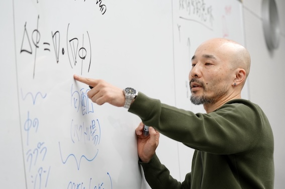

General Relativity
Black-hole shadows, photon capture, cosmic censorship, and high-energy processes near strong gravitational fields.
Theoretical physics / Mathematics education / Akita Prefectural University
A theoretical physicist and mathematics educator working across general relativity, quantum field theory in curved spacetime, fluid mechanics, differential geometry, and dimensional analysis.

Profile
This site brings together research in theoretical physics, mathematics education, teaching, and selected photographs from academic travel.
Umpei Miyamoto is Professor and Head of the Research and Education Center for Comprehensive Science at Akita Prefectural University. His research interests include general relativity, quantum field theory in curved spacetime, fluid mechanics, differential geometry, and dimensional analysis.
His work studies black-hole spacetimes, particle creation in strong gravitational settings, links between Rayleigh-Plateau and Gregory-Laflamme instabilities, and the stability of constant-mean-curvature hypersurfaces.
Research Themes
The common thread is stability: of horizons, vacua, interfaces, hypersurfaces, and mathematical descriptions.
Black-hole shadows, photon capture, cosmic censorship, and high-energy processes near strong gravitational fields.
Dynamic Casimir effects, sudden boundary changes, particle creation, and semiclassical backreaction.
Interfaces, drops, jets, and the correspondence between Rayleigh-Plateau and Gregory-Laflamme instabilities.
Constant-mean-curvature hypersurfaces, stability, constraints, and linear-algebraic dimensional analysis.
Recent Publications
Recent papers give a compact view of the current research directions.
Album
Photographs from research travel, overseas stays, Akita, and other places in Japan, shown newest first.